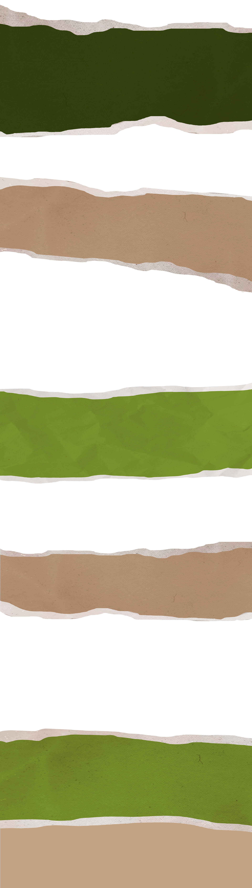
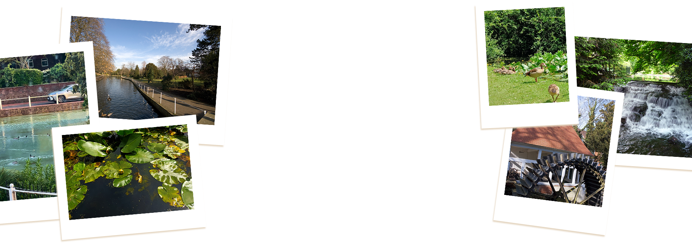
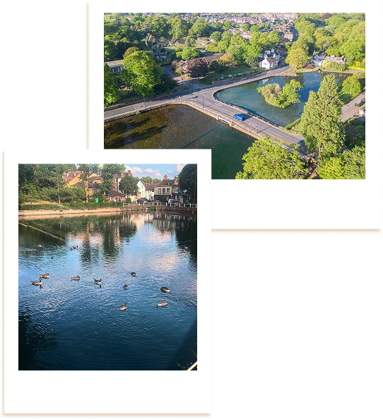
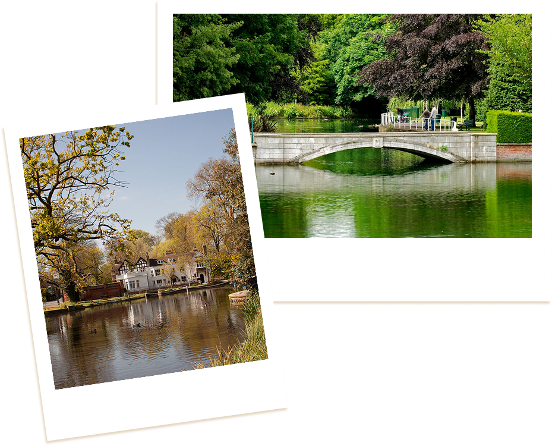
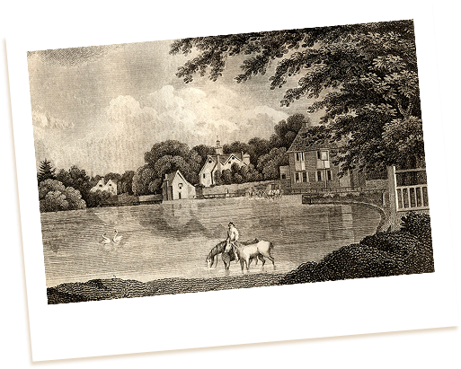
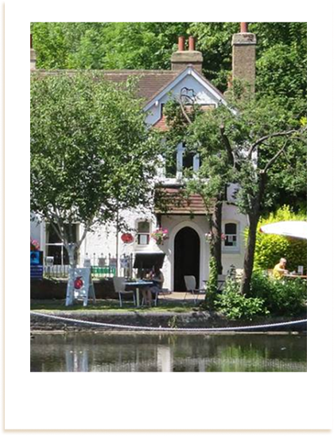
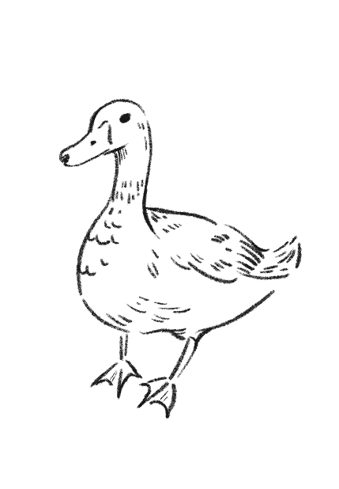

Carshalton Ponds are a pair of beautiful ornamental ponds located in the heart of Carshalton Village, a historic pocket of South London within the Borough of Sutton. Fed by natural springs and framed by heritage buildings, the ponds have been a focal point of the village since the 18th century and remain one of the area’s most peaceful spots for slow walks, quiet chats, and scenic views.

The ponds are famously home to ducks, swans, coots, and geese, and it’s common to spot herons patiently fishing along the water’s edge. In the warmer months, bats and damselflies flutter around the banks, adding to the calm, natural charm. It’s the perfect place to sit, unwind, and enjoy a rare bit of wildlife watching in London without needing to go far.
Fun fact: Because the ponds have a constant flow of water, winter migrant birds visit when other ponds freeze.
Open 24/7

Parking nearby - Public car park at Carshalton Station
(Station Approach, SM5 2HW)
Popular hours
Standing just beside the water is Honeywood Museum, a beautifully preserved historic house with exhibitions on local history. Across the pond, the picturesque All Saints Church overlooks the village centre. A short stroll away is The Grove, a public park where part of the River Wandle flows. Once medieval manor land, The Grove later became a private estate before opening as a public park in the 1920s. Today it offers walking paths, green lawns, and river views that extend the calm atmosphere of the ponds.
While based in Greater London, Carshalton still carries the charm of a small village - with cafés, traditional pubs, charity shops, and independent businesses dotted along the High Street. It’s popular with walkers, families, photographers, and anyone needing a break from the busy parts of London.


The Gate House
Honeywood Walk
Carshalton SM5 3NX
London

No need to book